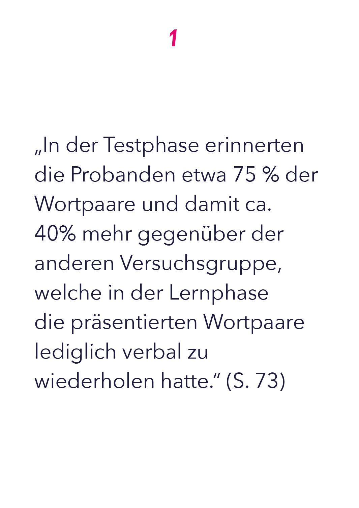
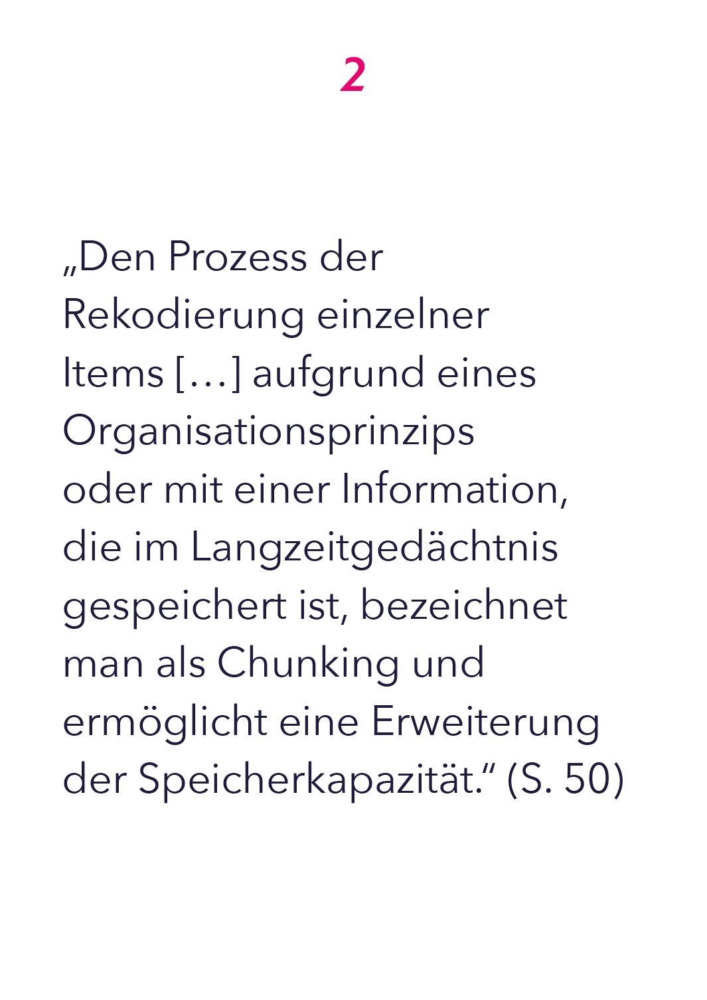
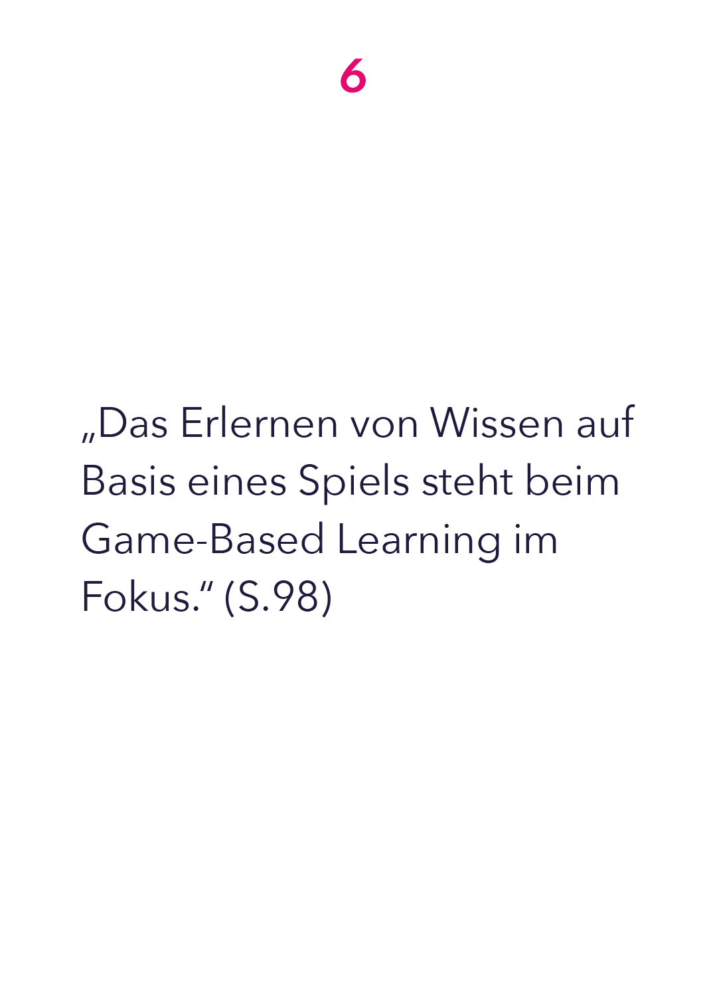
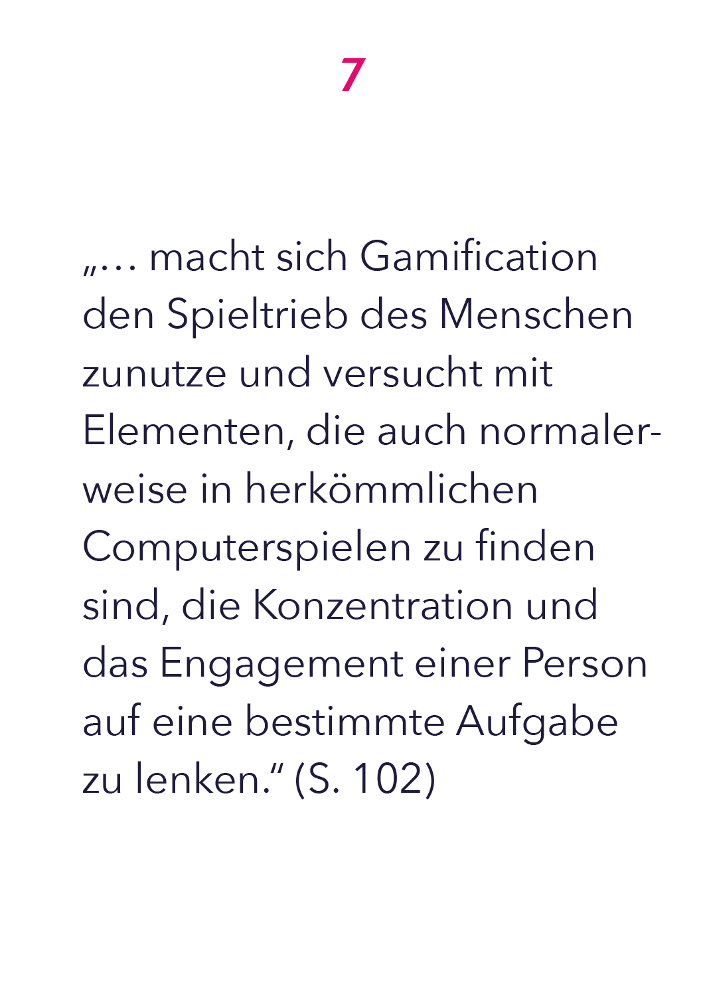
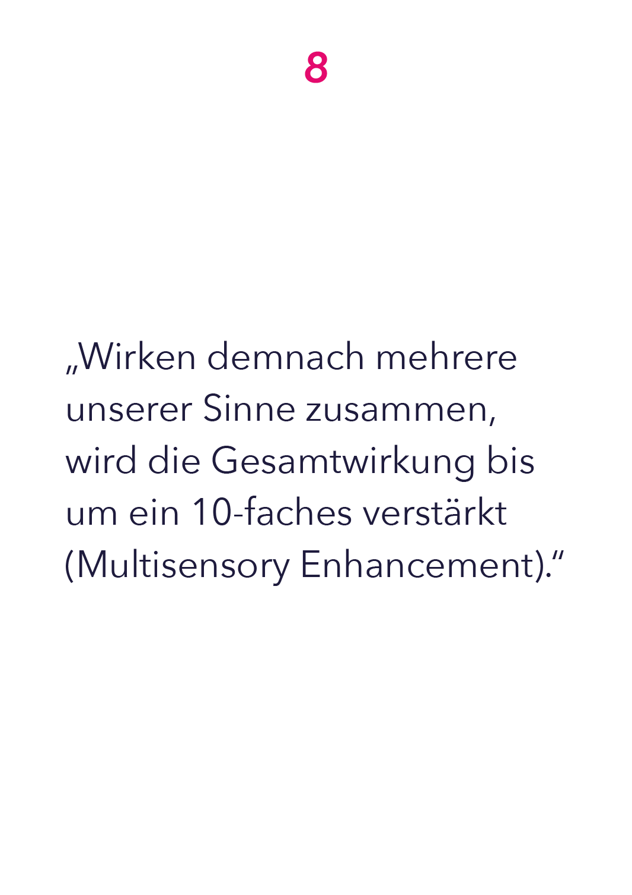

Friedrich, F., F. & Mandl, H. (2006). Handbuch
Lernstrategien. Hogrefe Verlag GmbH & Co. KG, Göttingen.
Link


Schmidt, C. G. V. (2008). Neuropsychologische Aspekte des Zweitspracherwerbs - untersucht am Wortschatzerwerb deutschlernender Erwachsener (Nr. 1). Universität Wien. Fakultät für Philosophie und Bildungswissenschaft. https://doi. org/10.25365/thesis.2181
Becker-Carus, C., Wendt, M. (2017). Gedächtnis. In: Allgemeine Psychologie. Springer, Berlin, Heidelberg. https://doi.org/10.1007/978-3-662- 53006-1_8
Becker-Carus, C., Wendt, M. (2017). Gedächtnis. In: Allgemeine Psychologie. Springer, Berlin, Heidelberg. https://doi.org/10.1007/978-3-662- 53006-1_8
Konrad, K. (2014, 29. Mai). Lernen – Definition und theoretische Perspektiven. In: Lernen lernen – allein und mit anderen. Springer VS, Wiesbaden. https://doi.org/10.1007/978-3-658-04986- 7_2

Leyh, C. & Strahringer, S. (2017). Gamification und Serious Games - Grundlagen, Vorgehen und Anwendungen. Springer Vieweg, Wiesbaden. https://doi.org/10.1007/978-3-658-16742-4_1

Leyh, C. & Strahringer, S. (2017). Gamification und Serious Games - Grundlagen, Vorgehen und Anwendungen. Springer Vieweg, Wiesbaden. https://doi.org/10.1007/978-3-658-16742-4_1

4. Semester